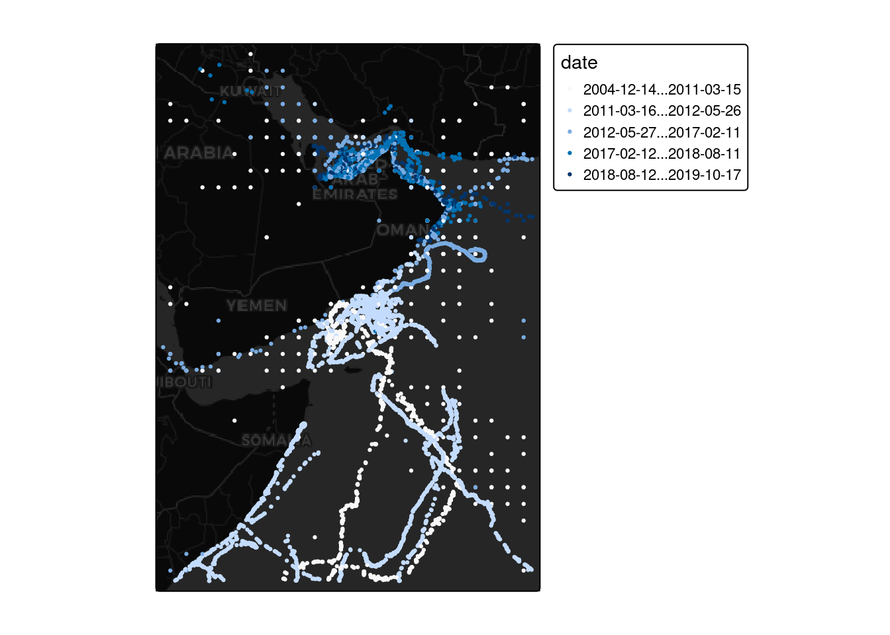
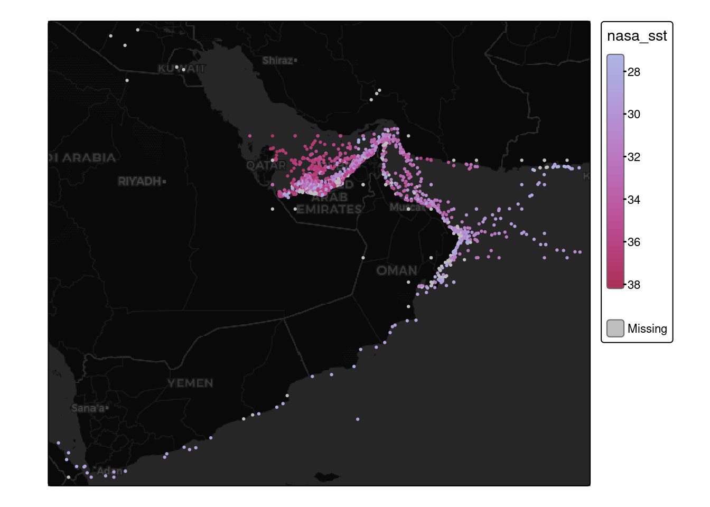

knitr::opts_chunk$set(message=FALSE, warning=FALSE)EarthData strategies
In this example, we have over 13K distinct points where turtles have been sampled over many years, and we wish to extract the sea surface temperature at each coordinate point. This task is somewhat different than ones we have considered previously, because instead of extracting data from a continuous cube in space & time, we have only discrete points in space and time we wish to access. Downloading files representing entirety of space or continuous ranges in time is thus particularly inefficient. Here we will try and pluck out only the sample points we need.
This design is a nice chance to illustrate workflows that depend directly on URLs, without leveraging the additional metadata that comes from STAC.
library(earthdatalogin)
library(rstac)
library(tidyverse)
library(stars)
library(tmap)
library(gdalcubes)# handle earthdata login
edl_netrc()We begin by reading in our turtle data from a spreadsheet and converting the latitude/longitude columns to a spatial vector (spatial points features) object using sf:
turtles <-
read_csv("https://raw.githubusercontent.com/nmfs-opensci/NOAAHackDays-2024/main/r-tutorials/data/occ_all.csv",
show_col_types = FALSE) |>
st_as_sf(coords = c("decimalLongitude", "decimalLatitude"))
st_crs(turtles) <- 4326 # lon-lat coordinate system
dates <- turtles |> distinct(date) |> pull(date)We have 13222 data points, including 1695 unique dates that stretch from 2004-12-14 to 2019-10-17.
Let’s take a quick look at the distribution of the data (coloring by date range):
# Quick plot of the turtle data
pal <- tmap::tm_scale_ordinal(5)
tm_basemap("CartoDB.DarkMatter") +
tm_shape(turtles) + tm_dots("date", fill.scale = pal)
Searching for NASA sea-surface-temperature data is somewhat tricky, since the search interfaces take only date ranges, not specific dates. The SST data is organized as one netcdf file with global extent for each day, so we’ll have to request all URLs in a date range and then filter those down to the URLs matching the dates we need.
NASA’s STAC search is much slower and more prone to server errors than most STAC engines. NASA provides its own search API, which is substantially faster and more reliable, though limited to 2000 results per call.
last_date <- as.character(max(turtles$date))
resp <- edl_search(short_name = "MUR-JPL-L4-GLOB-v4.1",
temporal = c("2015-01-01", last_date))
urls <- edl_extract_urls(resp)# Subset urls to only those dates that are found in turtles data please
url_dates <- as.Date(gsub(".*(\\d{8})\\d{6}.*", "\\1", urls), format="%Y%m%d")
urls <- urls[ url_dates %in% dates ]
# If we didnt' search the full turtle history:
url_dates <- as.Date(gsub(".*(\\d{8})\\d{6}.*", "\\1", urls), format="%Y%m%d")
mini_turtle <- turtles |> filter(date %in% url_dates)Okay, we have 924 urls now from which to extract temperatures at our observed turtle coordinates.
A partial approach, via stars:
This approach works on a subset of URLs, unfortunately stars is not particularly robust at reading in large numbers of URLs
some_urls <- urls[1:50]
some_dates <- as.Date(gsub(".*(\\d{8})\\d{6}.*", "\\1", some_urls), format="%Y%m%d")
# If we test with a subset of urls, we need to test with a subset of turtles too!
tiny_turtle <- mini_turtle |> filter(date %in% some_dates)
bench::bench_time({
sst <- read_stars(paste0("/vsicurl/", some_urls), "analysed_sst",
#along = list(time = some_dates), ##
quiet=TRUE)
st_crs(sst) <- 4326 # Christ, someone omitted CRS from metadata
# before we can extract on dates, we need to populate this date information
sst <- st_set_dimensions(sst, "time", values = some_dates)
})process real
6.84s 1.32m bench::bench_time({
turtle_temp <- st_extract(sst, tiny_turtle, time_column = "date")
})process real
9.71s 2.13m gdalcubes – A more scalable solution
library(gdalcubes)
gdalcubes_set_gdal_config("GDAL_NUM_THREADS", "ALL_CPUS")
gdalcubes_options(parallel = TRUE)Access to NASA’s EarthData collection requires an authentication. The earthdatalogin package exists only to handle this!
Unlike sf, terra etc, the way gdalcubes calls gdal does not inherit global environmental variables, so this helper function sets the configuration.
earthdatalogin::with_gdalcubes()Unfortunately, NASA’s netcdf files lack some typical metadata regarding projection and extent (bounding box) of the data. Some tools are happy to ignore this, just assuming a regular grid, but because GDAL supports explicitly spatial extraction, it wants to know this information. Nor is this information even provided in the STAC entries! Oh well – here we provide it rather manually using GDAL’s “virtual dataset” prefix-suffix syntax (e.g. note the a_srs=OGC:CRS84), so that GDAL does not complain that the CRS (coordinate reference system) is missing. Additional metadata such as the timestamp for each image is always included in a STAC entry and so can be automatically extracted by stac_image_collection. (stars is more forgiving about letting us tack this information on later.)
vrt <- function(url) {
prefix <- "vrt://NETCDF:/vsicurl/"
suffix <- ":analysed_sst?a_srs=OGC:CRS84&a_ullr=-180,90,180,-90"
paste0(prefix, url, suffix)
}Now we’re good to go. We create the VRT versions of the URLs to define the cube. We can then extract sst data at the point coordinates given by turtle object.
bench::bench_time({
cube <- gdalcubes::stack_cube(vrt(urls), datetime_values = url_dates)
sst_df <- cube |> extract_geom(mini_turtle, time_column = "date")
})process real
6.73s 2.86m The resulting data.frame has the NASA value for SST matching the time and space noted noted in the data. The NetCDF appears to encodes temperatures to two decimal points of accuracy by using integers with a scale factor of 100 (integers are more compact to store than floating points), so we have to convert these. There are also what looks like some spurious negative values that may signal missing data.
# re-attach the spatial information
turtle_sst <-
mini_turtle |>
tibble::rowid_to_column("FID") |>
inner_join(sst_df, by="FID") |>
# NA fill and convert to celsius
mutate(x1 = replace_na(x1, -32768),
x1 = case_when(x1 < -300 ~ NA, .default = x1),
nasa_sst = (x1 + 27315) * 0.001)pal <- tmap::tm_scale_continuous(5, values="hcl.blue_red")
tm_basemap("CartoDB.DarkMatter") +
tm_shape(turtle_sst) + tm_dots("nasa_sst", fill.scale = pal)